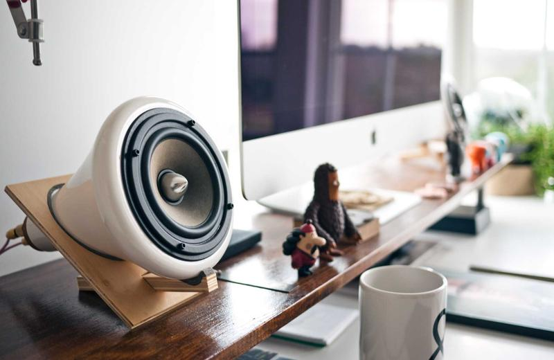

Italy Trip — September 2025
Two weeks. Already miss it. — #travel

Rome (4 nights)
Colosseum at 8 am before the crowds — worth the early alarm
Trastevere neighbourhood for dinner every night if possible
Pantheon is free now — go twice, different times of day
Best coffee: Sant'Eustachio il Caffè (stand at the bar, no tourist prices)
Amalfi Coast (5 nights, based in Ravello)
Ravello is quieter and cooler than Positano — better choice
Path of the Gods walk: 8 km, 3 hours, views are unreal
Boat trip to Capri: book through hotel, not the port touts
Florence (4 nights)
Uffizi: book 3 months ahead or you won't get in
Best meal: Trattoria Mario near the Mercato Centrale — €12 lunch, no reservations
Climb the Duomo (no lift) — absolutely worth it at sunrise slot
Practical notes
Train: Trenitalia app (book ahead for high-speed, flex for regional)
Cash still needed at smaller places — keep €100 on hand
Tipping not expected but appreciated (round up the bill)
Already planning to go back for Sicily and the north.